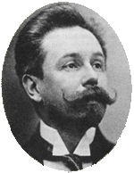

Sunday, January the 29th, 2006
back to: title, date or indexes
Much of the work of the Russian composer Alexander Scriabin (1872-1915) was written for piano. This is surprising when one considers how tiny his hands were. Indeed, there were two occasions during his short, fraught life when he injured them while relentlessly practising piano pieces which called for hands larger than his own.
Tiny his hands may have been, but this puny neurasthenic Russian cultivated a pair of decisive mustachios.

Among his orchestral works, the Poem of Ecstasy, opus 54, is a supremely bonkers piece which, long before Spinal Tap, goes up to eleven. One critic imagined he was hearing a graphic portrayal of the players all having sex with each other. Another refers to the “malignant sneers from muted trombones… was music ever more evil-sounding”?
Not everyone appreciated Scriabin at the time, of course. The man who was chosen to conduct the premiere of his Second Symphony complained “After Scriabin, Wagner lisps sweetly like a suckling babe. I think that I will go mad any moment now. Where can one hide from such music? Help me!”
My favourite Scriabin piece is the Mysterium. This was designed as a total art work, involving an orchestra, dance, light, and exotic perfumes, to be performed in the Himalayas, its playing ushering in Armageddon. Mysterium would be “a grandiose religious synthesis of all arts which would herald the birth of a new world” and the emergence of a Nietzschean Superman. Whether this Superman would have tiny little hands and decisive mustachios we do not know, for Scriabin succumbed to septicemia when the composition was barely begun. It thus has a place in the museum of lost or non-existent works of art, about which I shall write more soon.
Hooting Yard on the Air, February the 1st, 2006 : “Some Notes on Compartments” (starts around 09:37)